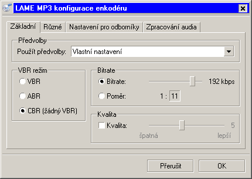

Stáhněte nejposlednější verzi BonkEnc z SourceForge nebo z BonkEnc homepage. Instalujte program a spusťte jej. Vložte audio CD do Vaší CD/DVD mechaniky. CD stopy se obvykle automaticky ukáží v hlavním okně BonkEnc. Pokud se tak nestalo, přidáte stopy do pracovního seznamu kliknutím na tlačítko "Obsah audio CD".

Pokud nechcete vyplňovat ručně názvy pro CDéčka, můžete použít dotaz do "freedb CD" databáse. Informace jsou potom vyplněny automaticky za Vás. Klikněte v menu "Databanka" na nabídku "Dotaz na CDDB-databázi". Mělo by se otevřít toto okno:

Program vyplní automaticky informace o stopách:

Nakonec bychom měli konfigurovat hlavní nastavení pro program. Zvolte tlačítko "Obecná nastavení" z menu "Volby". Zobrazí se následující dialog:

V prvním okně můžete vybrat kodér. BonkEnc standardně nabízí LAME MP3-kodér, který použijeme v tomto příkladu. Zkontrolujte, zda je volba "Kódovat On-The-Fly" vybraná, po případě ji aktivujete (při čtení z CD ukládá přímo do mp3, bez meziukládání wav na pevný disk). Též nastavte výstupní adresář, kam mají být uloženy MP3 soubory.
Pozn.: Pokud chcete jednotlivé soubory nejdříve upravovat v editoru, ripujte CD do WAVů - neztratíte kvalitu a MP3 byste museli stejně převést do vavů.
Ve vstupním poli "Vzor názvu souboru" můžete nastavit, jak budou jména souborů formátovaná. Například jméno souboru s číslem stopy, jménem interpreta a názvem skladby.
Odpovídající vzor je "<track> <artist>-<title>". V tomto případě jméno souboru vypadá takto:

Pro více pokročilé uživatele je mnoho dalších nastavení, kterými můžete přizpůsobit nastavení osobním požadavkům.
Nyní bychom měli konfigurovat LAME-kodér tak , abychom získali kvalitní MP3 soubory. Zvolte z menu "Volby" nabídku "Nastavit zvolený enkodér".

Mělo by se objevit podobné dialogové okno jako dole:
BonkEnc má několik různých přednastavení pro LAME-kodér. Různá přednastavení kodéru vytvoří MP3 soubory s námi požadovanou kvalitou. Čím vyšší nastavení (např. "Extrémní"), tím větší budou MP3 soubory, ale také budou mít lepší zvuk. Já dávám přednost uživatelskému nastavení a podle situace nastavím kvalitu individuálně. Použijme ale nejdříve přednastavení "standard". Klikněte na "OK" a vyberte, které stopy chcete ripovat a kódovat.
Nyní v hlavním obrazovce můžeme vybrat které stopy chceme ripovat a kódovat. Nalevo u jednotlivých stop je zaškrtávací box. Stopa, která má v boxu X, bude ripovaná a kódovaná, ostatní ne. Kliknutím na box změníte volbu.
Teď můžete kliknout na Play-tlačítko a spustit ripovací a kódovací proces.

Ve spodní části okna se začne ukazovat postup v proužkovém grafu:

Když je každý titul hotov, seznam (kde byly všechny tituly zobrazené) je automaticky aktualizován.
Blahopřání! Právě jste ripovali a zakódovali do MP3 Váše první CD s BonkEnc!